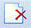

Elementos Comunes de las Ventanas
A continuación serán detallados los principales botones con los cuales se realizarán los diferentes procedimientos en el sistema:
Botón filtro de búsqueda
Dicho botón servirá para mostrar u ocultar el filtro de búsqueda dentro de las ventanas utilizadas.
Botones de Navegación
Las mismas operaciones se pueden realizar con las teclas del cursor siempre y cuando se esté en listado de datos.
Ir al primer registro
Permite ir al primer registro del listado con el mouse.
Ir al registro anterior
Ir al registro anterior del listado de datos.
Ir al registro siguiente
Ir al registro siguiente del listado de datos.
Ir al ultimo registro

Ir al último registro del listado de datos.
Agregar
Este botón se debe utilizar para agregar información en el sistema. En unos casos los datos se digitan en la misma ventana y en otros aparecerá una nueva ventana en función de la complejidad de la información que se está editando.
Modificar
Al presionar el botón de modificar será posible editar algún dato agregado previamente.
Borrar
Para eliminar un registro creado se debe seleccionar la información o entrada que se desee eliminar y presionar el botón borrar.
Cancelar
Este botón servirá para cancelar algún dato creado previamente en el sistema.
Imprimir
Presionando dicho botón se podrá imprimir la información deseada.